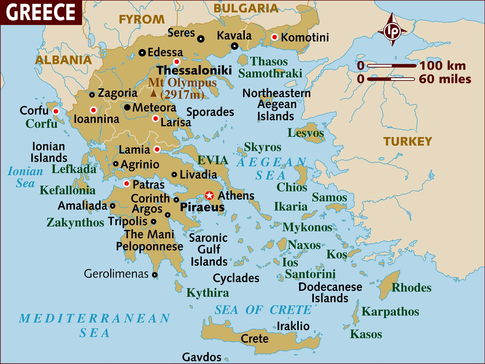

Localizada no sudeste da Europa, a Grécia é conhecida por suas belas paisagens, ilhas e construções históricas.
O país possui uma parte continental e milhares de ilhas, banhadas pelos mares Mediterrâneo, Egeu e Jônico.

A bandeira da Grécia possui nove listras azuis e brancas e uma cruz no canto superior esquerdo. Suas cores são tradicionalmente associadas ao céu e ao mar.
VOLTA AO MUNDO